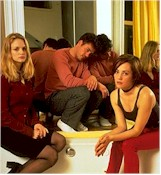

|
Two Girls and a Guy
review by Elias Savada, 24 April 1998
With a title that at first blush appears to be another
lightweight TV sexcom, James Toback's film instead runs like an angst-ridden one-act
talkathon between Blake Allen (Robert Downey, Jr.), an egregious fool, struggling actor,
and exceedingly qualified cad, and his two 10-month-old separate, but equal, significant
others: tall and sensuous Carla (Heather Graham) and cute, vertically challenged, and
street smart Lou (Natasha Gregson Wagner). The women discover their common connection and
compare notes on the object of their disaffection before an extended confrontation with
the cad himself, in a garrulous battle between the feminine offense and the infidel
defense. Downey does a great squirm, a skewered, soapish twist in this hellishly funny As
the Worm Turns. Good or bad? Well, several annoyed patrons at a preview screening last
week gave it the old heave ho: "It sucked." Obviously not Downey fans. This
movie is definitely not for the crowd looking for a cheap thrill. Re-submitted 10 tens to
the MPAA, the film was finally re-rated it to an R -- for one strong sex scene, sexual
dialogue, and a violent image -- from the original NC-17. This inspires the
VD/laserdisc crowd, the small but growing movie-owning segment of the homevideo market
that will ultimately see the more exciting footage.
For me, I've seen a heck of a lot worse and Downey's true-to-life uninhibited
performance (it's nice that an ex-con can find some work these days) kept me wondering
about the mesmerizing audacity of the actor as portrayed by Downey vs. the haughty
insolence of Downey himself playing the character. Not bad ... not bad at all.
Two Girls…
doesn't appear scripted at all. In this type of piece it either shows Toback's skill in
fashioning wickedly biting dialogue, the actors' marvelous ability to improvise, or the
combination that results. There's no fat -- it's lean and mean -- particularly
impressive as the cast and crew shot the picture over an 11-day period in near real-time
order. Just about all of it set in the scene of the crimes, Allen's loft, and
claustrophobically photographed by Barry Markowitz. Yes, it's Downey's film, but Graham
(fresh from her stand-out, roller-skating performance in Boogie Nights and -- much
less so -- Lost in Space) and independent feature star Wagner (daughter of the late,
great Natalie Wood and screenwriter Richard Gregson) provide truly honest and
understanding performances. Here are two fresh young faces with very bright futures.
In the 20 years Toback has been directing his own screenplays, he has mustered only a
handful of product, spanning 1978's Fingers (another performance driven piece
starring Harvey Keitel as the son of a Mafia don who would rather fulfill his desire to
become a concert pianist rather than taking over the family business) to early 1980s
obsessive pieces Love and Money and Exposed to The Pick-Up Artist of
1987, also featuring Downey as a self-confident womanizer and probably Toback's most
commercial feature before his current opus.
Which brings us
back to do-re-mi, er, sorry Sound of Music fans. Two Girls and a Guy is
absolutely not a family picture. In a weird, Downeyesque sort of world, you might call it
a date flick, but in a saner, Savadesque world, it might actually provide some
misunderstanding couples an out for any shaky relationship(s). Toback at least makes a
fitting tribute to his inspiration for this piece, i.e. Jules and Jim, Francois
Truffaut's captivating ode to a Bohemian threesome, sort of a Two Guys and a Girl
of the 1960s. There's a huge three-sheet poster for the Nouvelle Vague film in Downey's
spacious Soho walk-up.
The charmingly duplicitous Allen comments as he digs his grave deeper that "I
think words are not serving me well at all." If you're the adventurous sort who
yearns for an offbeat gen-x comedy, go on, buy a ticket, sit back, and wait for the banter
to begin.
|
|
Written and
Directed by:
James Toback
Starring
by:
Robert Downey, Jr.
Heather Graham
Natasha Gregson Wagner
FULL
CREDITS
BUY
VIDEO
|
[Shared Documents/General/Website/mediabar/mb.html]
|